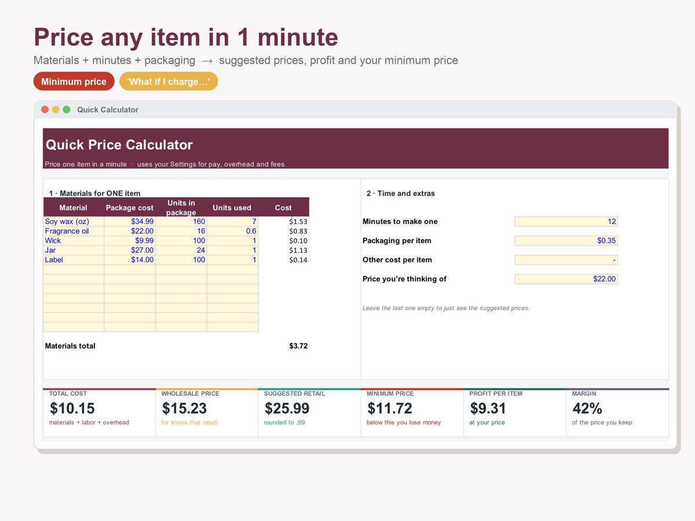
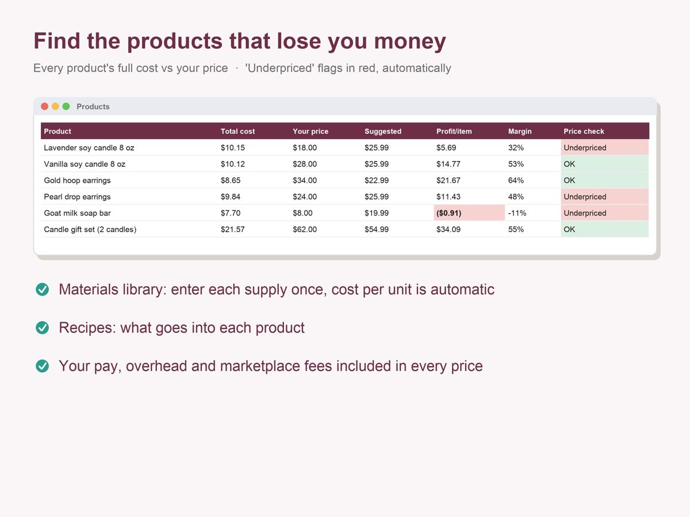

How to Price Handmade Products: Cost, Wholesale and Retail (Worked Example)
Many makers price by gut feel: "materials times three", or whatever similar items seem to sell for. The problem is that neither number knows what your item really costs once your time, your overhead and the fees on every sale are counted. Here's a simple method, with one candle worked all the way through.
1. Add up the real cost of one item
Four parts go into the cost of every item you make:
- Materials: everything that ends up in the product, at the cost per unit (a $30 bag of wax that makes 15 candles is $2 per candle).
- Your labor: minutes of work × the hourly pay you want. Labor is a cost, not profit: if you leave it out, you're working for free.
- Overhead: monthly costs that aren't in any single item (tools, software, a share of rent, marketing), divided by the items you make in a month.
- Packaging: box, label, tissue, thank-you card.
| Cost of one candle | How it's calculated | Cost |
|---|---|---|
| Materials | Wax $2.10 · fragrance oil $1.35 · wick $0.15 · jar and lid $1.40 | $5.00 |
| Labor | 15 minutes at $20 an hour | $5.00 |
| Overhead | $240 a month ÷ 120 items a month | $2.00 |
| Packaging | Box, label and card | $0.90 |
| Total cost | $12.90 |
Example numbers only. Use your own supplier prices, your own time and your own overhead.
2. Turn the cost into a wholesale price
Wholesale is the price you'd charge a shop that buys to resell. Many makers use a markup of 1.5 to 2 times total cost; pick what your market supports. This example uses 1.5×: $12.90 × 1.5 = $19.35. The markup above your cost is what pays for growth, mistakes and slow months; your hourly pay is already inside the cost.
3. Turn wholesale into a retail price
Retail is what a customer pays you directly. Many makers use 1.5 to 2 times wholesale, which puts retail at roughly 2.25 to 4 times your total cost. This example uses 1.7×: $19.35 × 1.7 = $32.90, rounded up to $32.99. If you ever want to sell to shops, set retail this way from the start: a shop needs room to buy at wholesale and still sell at your retail price.
4. Subtract the fees and find your minimum price
Selling online usually means a marketplace fee and a payment processing fee on every sale, often a percentage of the price plus a small fixed amount. In this example: 6.5% + 3% of the price, plus $0.45 per sale. These rates are examples; check the ones your platform and payment provider actually charge.
| Price | Fees | Profit per candle | Margin |
|---|---|---|---|
| $15.00 (materials × 3) | $1.88 | $0.22 | 1.5% |
| $24.00 | $2.73 | $8.37 | 35% |
| $32.99 (suggested retail) | $3.58 | $16.51 | 50% |
Profit here is what's left after the total cost (your $5 of labor included) and the fees. The "materials × 3" price pays your hourly rate and almost nothing else.
Your minimum price is the point where profit is zero: (total cost + fixed fee) ÷ (1 − percentage fees) = ($12.90 + $0.45) ÷ (1 − 0.095) = $14.76, rounded up to the cent. Below that, every sale loses money once you count your time.

5. Check every product, not just one
Once the method works for one item, run it for your whole range. Items that take longer to make, or use one expensive material, are often the ones to check first. Compare each current price with the suggested one and fix the biggest gaps first. Then repeat the check whenever a supplier raises prices or a platform changes its fees.

Already selling? Tracking income and expenses in a simple profit and loss sheet shows whether the new prices are actually working.
Want the math done for you? The pricing calculator prices every product from your real costs and flags the underpriced ones:

General information only, not financial, tax or legal advice.